전기공사기사 (2011-03-20 기출문제)
1과목: 전기응용 및 공사재료
1. 사이리스터(thyristor)의 응용에 대한 설명으로 잘못된 것은?
- 위상제어에 의해 교류전력제어가 가능하다.
- 교류전원에서 가변 주파수의 교류변환이 가능하다.
- 직류전력의 증폭인 컨버터가 가능하다.
- 위상제어에 의해 제어정류, 즉 교류를 가변 직류로 변환할 수 있다.
(정답률: 87%)

2. 온실가스 감축을 위해 백열전구 사용을 억제하는 이유 중 맞지 않는 것은?
- 백열전구는 전체에너지의 약 95%가 열로 발산된다.
- 동일 용량의 형광등에 비해 소비전력이 크다.
- 형광등에 비해 빛의 사용량이 많다.
- 이산화탄소의 배출을 줄인다.
(정답률: 64%)
3. 다음 단상 유도 전동기에서 기동 토크가 가장 작은 전동기는?
- 분상 기동 전동기
- 콘덴서 전동기
- 반발 기동 전동기
- 세이딩 코일형 전동기
(정답률: 86%)
4. 저항가열은 다음 중 어느 것을 이용한 것인가?
- 아크손
- 유전체손
- 히스테리시스손
- 줄손
(정답률: 85%)
5. 사이리스터의 게이트 트리거 회로에 적합하지 않은 것은?
- UJT 발진회로
- DIAC에 의한 트리거 횔
- PUT 발진회로
- SCR 발진회로
(정답률: 79%)
6. 다음 1차 전지 중 휴대용 라디오, 손전등 ,완구, 시계 등에 매우 광범위하게 이용되고 있는 건전지는?
- 망간 건전지
- 공기 건전지
- 수은 건전지
- 리튬 건전지
(정답률: 83%)
7. 양수량 40[m3/min], 총 양정 13[m]의 양수펌프용 전동기의 소요출력은 약 몇[kW]인가? (단, 펌프의 효율은 80[%]이다.)
- 68
- 106
- 136
- 212
(정답률: 82%)
8. 철도 운전에 관한 설명으로 잘못된 것은?
- 철도 동력원의 에너지 사용 효율의 우수성은 전기운전-디젤엔진-증기기관 순이다.
- 철도 궤도는 레일, 침목, 노변의 3개 요소로 구성된다.
- 직류식 전기공급은 급전전압이 낮고 지상 설비비가 비교적 많이 든다.
- 교류식 전기공급은 전압 불균형 등에 대한 대책이 필요하다.
(정답률: 81%)
9. 40W 2중 코일 텅스텐 전구의 표준광속이 500[lm]이다. 이 때 전등효율[lm/W]은?
- 12.5
- 11
- 14
- 15.5
(정답률: 84%)
10. 중량 50[t]의 전동차에 2[㎞/h/s]의 가속도를 주는데 필요한 힘[㎏]은?
- 2100
- 3100
- 4100
- 5100
(정답률: 69%)
11. 전선 및 케이블의 구비조건으로 맞지 않는 것은?
- 도전율이 크고 고유저항이 작을 것
- 기계적 강도 및 가요성이 풍부할 것
- 내구성이 크고 비중이 클 것
- 시공 및 접속이 쉬울 것
(정답률: 86%)
12. 과전류 차단기로 사용되는 A종 퓨즈는 정격전류의 몇 배의 전류에서 용단되지 않아야 하는가?
- 1
- 1.1
- 1.25
- 1.3
(정답률: 75%)
13. 점착성은 없으나 절연성, 내온성 및 내유성이 강한 절연 테이프로서 연피 케이블의 접속에 사용하는 것은?
- 자기용 압착 테이프
- 면 테이프
- 고무 테이프
- 리노 테이프
(정답률: 89%)
14. 층간 절연에 가장 좋은 절연 재료는?
- 운모
- 면포
- 크래프트 종이
- 에나멜
(정답률: 69%)
15. 버스 덕트의 부속품이 아닌 것은?
- 엘보(Elbow)
- 레듀서(Reducer)
- 오프셋(OFF-Set)
- 커플링(Coupling)
(정답률: 59%)
16. 경완철에 폴리머 애자를 설치 할 경우 사용되는 재료가 아닌 것은?
- 볼쇄클
- 소켓아이
- 데드엔드크램프
- 현수애자
(정답률: 73%)
17. 조명기구 등을 배선 선로의 지지물 등에 시설하는 경우 중량은 부속 금구류를 포함하여 몇 [㎏] 이하 이어야 하는가?
- 70
- 80
- 90
- 100
(정답률: 70%)
18. 물탱크의 물의 양에 따라 동작하는 스위치로서 공장, 빌딩 등의 옥상에 있는 물탱크의 급수펌프에 설치된 전동기 운전용 마그네트 스위치와 조합하여 사용하는 스위치는?
- 수은 스위치
- 타임 스위치
- 압력 스위치
- 플로트레스 스위치
(정답률: 75%)
19. 다음 중 연축전지에서 사용되지 않는 물질은?
- PbO2
- Pb
- H2SO4
- Ni
(정답률: 86%)
20. 고압 및 특고압 인입선에 사용하는 전선의 종류 및 굵기[mm]는?
- 특고압 절연전선, 5[mm]이상
- 특고압 절연전선, 2.6[mm]이상
- 고압 절연전선, 2.6[mm]이상
- 고압 절연전선, 2[mm]이상
(정답률: 61%)
2과목: 전력공학
21. 발전기나 변압기의 내부고장 검출에 가장 많이 사용되는 계전기는?
- 역상계전기
- 비율차동계전기
- 과전압계전기
- 과전류계전기
(정답률: 18%)
22. 승압기에 의하여 전압 Ve에서 Vh로 승압할 때, 2차 정격전압 e, 자기용량 W인 단상 승압기가 공급할 수 있는 부하 용량은 어떻게 표현되는가?
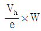
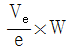
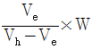
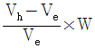
(정답률: 16%)
23. 페란티(ferranti) 효과의 발생 원인은?
- 선로의 저항
- 선로의 인덕턴스
- 선로의 정전용량
- 전로의 누설 컨덕턴스
(정답률: 19%)
24. 전자계산기에 의한 전력조류 계산에서 슬랙(slack) 모선의 지정값은? (단, 슬랙모선을 기준모선으로 한다.)
- 유효전력과 무효전력
- 모선 전압의 크기와 유효전력
- 모선 전압의 크기와 무효전력
- 모선 전압의 크기와 모선 전압의 위상각
(정답률: 16%)
25. 공장이나 빌딩에서 전압을 220V에서 380V로 승압하여 사용할 때, 이 승압의 이유로 가장 타당한 것은?
- 아크 발생 억제
- 배전 거리 증가
- 전력 손실 경감
- 기준충격절연강도 증대
(정답률: 18%)
26. 직류 2선식 대비 전선 1가닥 당 송전 전력이 최대가 되는 전송 방식은? (단, 선간전압, 전송전류, 역률 및 전송거리가 같고 중성선은 전력선과 동일한 굵기이며 전선은 같은 재료를 사용하고, 교류 방식에서 cosθ=1로 한다.)
- 단상 2선식
- 단상 3선식
- 3상 3선식
- 3상 4선식
(정답률: 12%)
27. 회전속도의 변화에 따라서 자동적으로 유량을 가감하는 것은?
- 예열기
- 급수기
- 여자기
- 조속기
(정답률: 17%)
28. 송전단전압 3300V, 길이 3㎞인 고압 3상배전선에서 수전단전압을 3150V로 유지하려고 한다. 부하전력 1000kW, 역률 0.8(지상)이며 선로의 리액턴스는 무시한다. 이때 적당한 경동선의 굵기[mm2]는? (단, 경동선의 저항률은 1/55[Ω·mm2/m]이다.)
- 100
- 115
- 130
- 150
(정답률: 13%)
29. 전력선과 통신선사이에 그림과 같이 차폐선을 설치하며, 각 선사이의 상호임피던스를 각각 Z12, Z1S, Z2S라 하고 차폐선 자기임피던스를 ZS라 할 때 저감계수를 나타낸 식은?
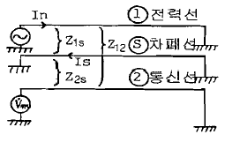
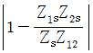
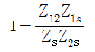
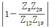
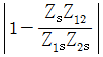
(정답률: 15%)
30. 전력선에 영상전류가 흐를 때 통신선로에 발생되는 유도장해는?
- 고조파유도장해
- 전력유도장해
- 정전유도장해
- 전자유도장해
(정답률: 19%)
31. 직접접지방식에 대한 설명 중 틀린 것은?
- 애자 및 기기의 절연수준 저감이 저하시킬 수 있다.
- 변압기 및 부속설비의 중량과 가격을 저하시킬 수 있다.
- 1상 지락사고 시 지락전류가 작으므로 보호계전기 동작이 확실하다.
- 지락전류가 저역을 대전류이므로 과도안정도가 나쁘다.
(정답률: 14%)
32. SF6가스차단기에 대한 설명으로 옳지 않은 것은?
- 공기에 비하여 소호능력이 약 100배 정도이다.
- 절연거리를 적게 할 수 있어 차단기 전체를 소형, 경량화 할 수 있다.
- SF6가스를 이용한 것으로서 독성이 있으므로 취급에 유의하여야 한다.
- SF6가스 자체는 불활성기체이다.
(정답률: 21%)
33. 증기압, 증기 온도 및 진공도가 일정할 때에 추기할 때는 추기하지 않을 때보다 단위 발전량 당 증기 소비량과 연료소비량은 어떻게 변화하는가?
- 증기 소비량, 연료 소비량은 다 감소한다.
- 증기 소비량은 증가하고 연료 소비량은 감소한다.
- 증기 소비량은 감소하고 연료 소비량은 증가한다.
- 증기 소비량, 연료 소비량은 다 증가한다.
(정답률: 16%)
34. 이상 전압에 대한 방호장치로 거리가 먼 것은?
- 피뢰기
- 방전코일
- 서지흡수기
- 가공지선
(정답률: 20%)
35. 3상 154kV 송전선의 일반회로정수가 A=0.900, B=150, C=j0.901×10-3, D=0.930 일 때 무부하시 송전단에 154kV를 가했을 때 수전단 저압은 몇 [kV] 인가?
- 143
- 154
- 166
- 171
(정답률: 11%)
36. 파동임피던스 Z1=400Ω인 가공선로에 파동임피던스 50Ω인 케이블을 접속하였다. 이 때 가공선로에 e1=80kV인 전압파가 들어왔다면 접속점에서의 전압의 투과파는 약 몇 [kV]가 되겠는가?
- 17.8
- 35.6
- 71.1
- 142.2
(정답률: 12%)
37. 피상전력 P[kVA], 역률 cosθ인 부하를 역률 100%로 개선하기 위한 전력용콘덴서의 용량은 몇 [kVA]인가?
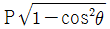
- P tanθ
- P cosθ
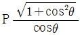
(정답률: 15%)
38. 저압 뱅킹방식의 장점이 아닌 것은?
- 전압강하 및 전력손실이 경감된다.
- 변압기 용량 및 저압선 동량이 절감된다.
- 부하 변동에 대한 탄력성이 좋다.
- 경부하시의 변압기 이용 효율이 좋다.
(정답률: 14%)
39. 가스냉각형 원자로에 사용하는 연료 및 냉각재는?
- 천연우라늄, 수소가스
- 농축우라늄, 질소
- 천연우라늄, 이산화탄소
- 농축우라늄, 흑연
(정답률: 13%)
40. 다중접지 계통에 사용되는 재폐로 기능을 갖는 일종의 차단기로서 과부하 또는 고장전류가 흐르면 순시동작하고, 일정시간 후에는 자동적으로 재폐로 하는 보호기기는?
- 리클로저
- 라인 퓨즈
- 섹셔널라이저
- 고장구간 자동개폐기
(정답률: 16%)
3과목: 전기기기
41. 동기 전동기의 기동법 중 자기동법에서 계자권선을 단락하는 이유는?
- 고전압의 유도를 방지한다.
- 전기자 반작용을 방지한다.
- 기동 권선으로 이용한다.
- 기동이 쉽다.
(정답률: 12%)
42. 동기기의 전기자권선에서 슬롯수가 48인 고정자가 있다. 여기에 3상 4극의 2층권을 시행할 때에 매극 매상의 슬롯수와 총 코일수는?
- 4, 48
- 12, 48
- 12, 24
- 9, 24
(정답률: 15%)
43. 정류기에 있어 출력측 전압의 리플(맥동)을 줄이기 위한 가장 좋은 방법은?
- 적당한 저항을 직렬로 접속한다.
- 적당한 리액터를 직렬로 접속한다.
- 커패시터를 직렬로 접속한다.
- 커패시터를 병렬로 접속한다.
(정답률: 16%)
44. 6극인 유도전동기의 토크가 τ이다. 극수를 12극으로 변환하였다면 변환한 후의 토크는?
- τ
- 2τ
- τ/2
- τ/4
(정답률: 16%)
45. 동기 전동기에 관한 설명 중 옳지 않은 것은?
- 기동 토크가 작다.
- 역률을 조정할 수 없다.
- 난조가 일어나기 쉽다.
- 여자기가 필요하다.
(정답률: 20%)
46. 변압기의 3상 전원에서 2상 전원을 얻고자 할 때 사용하는 결선은?
- 스코트 결선
- 포크 결선
- 2중 델타 결선
- 대각결선
(정답률: 22%)
47. 철심의 단면적이 0.085[m2], 최대자속밀도 1.5[Wb/m2]인 변압기 60[Hz]에서 동작하고 있다. 이 변압기의 1차 및 2차 권수는 120, 60이다. 이 변압기의 1차측에 발생하는 전압의 실효치는 약 몇 [V]인가?
- 4076
- 2037
- 918
- 496
(정답률: 12%)
48. 변압기의 임피던스 전압이란?
- 여자전류가 흐를 때의 변압기 내부 전압강하
- 여자전류가 흐를 때의 2차측 단자 전압
- 정격전류가 흐를 때의 2차측 단자 전압
- 정격전류가 흐를 때의 변압기 내부 전압강하
(정답률: 15%)
49. 유도 전동기 원선도 작성에 필요한 시험과 원선도에서 구할 수 있는 것이 옳게 배열된 것은?
- 무부하시험, 1차입력
- 부하시험, 기동전류
- 슬립측정시험, 기동토크
- 구속시험, 고정자권선의 저항
(정답률: 18%)
50. 회전자기 슬립 s로 회전하고 있을 때 고정자와 회전자의 실효 권수비를 α라 하면 고정자 기전력 E1과 회전자 기전력 E2와의 비는?
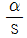
- sα
- (1-s)α
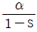
(정답률: 12%)
51. 1차 전압 6600[V], 권수비 30인 단상 변압기로 전등부하에 30[A]를 공급할 때의 입력[kW]은? (단, 변압기의 손실은 무시한다.)
- 4.4
- 5.5
- 6.6
- 7.7
(정답률: 17%)
52. 직류 발전기에서 양호한 정류를 얻기 위한 방법이 아닌 것은?
- 보상 권선을 설치한다.
- 보극을 설치한다.
- 브러시의 접촉저항을 크게 한다.
- 리액턴스 전압을 크게 한다.
(정답률: 18%)
53. 다이오드를 이용한 저항 부하의 단상반파 정류회로에서 맥동률(리플률)은?
- 0.48
- 1.11
- 1.21
- 1.41
(정답률: 15%)
54. 3상 유도전동기의 기동법으로 사용되지 않는 것은?
- Y-△ 기동법
- 기동보상기법
- 2차저항에 의한 기동법
- 극수변환 기동법
(정답률: 12%)
55. 단상 유도 전압 조정기의 양 권선이 일치할 때 직렬권선의 전압이 150[V], 전원 전압이 220[V]일 경우 1차와 2차 권선의 축 사이의 각도가 30° 이면 양 권선이 일치할 때 2차측 유기 전압이 150[V], 전원 전압이 220[V]일 경우 부하 측 전압은 약 몇 [V]인가?
- 370
- 350
- 220
- 150
(정답률: 9%)
56. 직류 분권전동기의 기동시에는 계자저항기의 저항값을 어떻게 해두어야 하는가?
- 0(영)으로 해둔다.
- 최대로 해둔다.
- 중위(中位)로 해둔다.
- 끊어 놔둔다.
(정답률: 16%)
57. 3상 변압기를 병렬 운전하는 경우 불가능한 조합은?
- △ - △ 와 Y - Y
- △ - Y 와 Y - △
- △ - Y 와 △ - Y
- △ - Y 와 △ - △
(정답률: 19%)
58. 권선형 유도전동기의 토크 - 속도 곡선이 비례추이 한다는 것은 그 곡선이 무엇에 비례해서 이동하는 것을 말하는가?
- 2차 효율
- 출력
- 2차회로의 저항
- 2차 동손
(정답률: 15%)
59. 60[Hz], 4[극]의 유도전동기의 슬립이 3[%]인 때의 매분 회전수는?
- 1260[rpm]
- 1440[rpm]
- 1455[rpm]
- 1746[rpm]
(정답률: 16%)
60. 출력 Po, 2차동손 Pc2, 2차입력 P2, 및 슬립 s인 유도전동기에서의 관계는?
- P2 : Pc2 : Po = 1 : s : (1-s)
- P2 : Pc2 : Po = 1 : s : (1-s) : s
- P2 : Pc2 : Po = 1 : s2 : (1-s)
- P2 : Pc2 : Po = 1 : (1-s) : s2
(정답률: 18%)
4과목: 회로이론 및 제어공학
61. RLC 직렬회로에서 자체 인덕턴스 L=0.02[mH]와 선택도 Q=60 일 때 코일의 주파수 f=2[㎒]였다. 이 코일의 저항은 몇[Ω]인가?
- 2.2
- 3.2
- 4.2
- 5.2
(정답률: 9%)
62. 각 상전압이 Va = 40sinωt[V], Vb=40sin(ωt+90°)[V], Vc=40sin(ωt-90°)[V]이라하면 영상대칭분의 전압은?
- 40sinωt
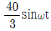
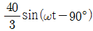
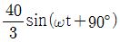
(정답률: 16%)
63. 분포정수 회로에서 선로의 특성 임피던스를 Z0, 전파정수를 γ라 할 때 무한장 선로에 있어서 송전단에서 본 직렬임피던스는?
- γZ0
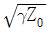
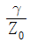
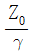
(정답률: 13%)
64. 그림과 같은 회로에 t = 0에서 S를 닫을 때의 방전과도전류 i(t)[A]는?
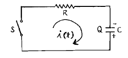
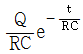
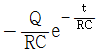
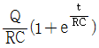
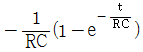
(정답률: 13%)
65. 비정현파 전류 i(t)=56sinωt+25sin2ωt+30sin(3ωt+30°)+40sin(4ωt+60°)로 주어질 때 왜형율은 약 얼마인가?
- 1.4
- 1.0
- 0.5
- 0.1
(정답률: 15%)
66. R=5[Ω], L=20[mH] 및 가변 콘덴서 C로 구성된 RLC 직렬회로에 주파수 1000[Hz]인 교류를 가한 다음 C를 가변시켜 직렬 공진시킬 때 C의 값은 약 몇 [㎌]인가?
- 1.27
- 2.54
- 3.52
- 4.99
(정답률: 11%)
67. 라플라스 변환함수
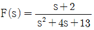
에 대한 역변환 함수 f(t)는?- e-2tcos 3t
- e-3tcos 2t
- e3tcos 2t
- e2tcos 3t
(정답률: 15%)
68. 대칭 6상 성형(star)결선에서 선간전압과 상전압의 관계가 바르게 나타난 것은? (단, Eℓ : 선간전압, Ep : 상전압)
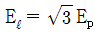
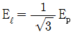
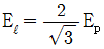
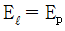
(정답률: 20%)
69. 기전력 E, 내부저항 r인 전원으로부터 부하저항 RL에 최대 전력을 공급하기 위한 조건과 그 때의 최대전력 Pm은?
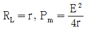
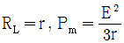
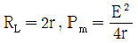
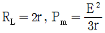
(정답률: 15%)
70. 4단자 회로에서 4단자 정수를 A, B, C, D라 하면 영상 임피던스
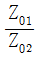
는?- D/A
- B/C
- C/B
- A/D
(정답률: 15%)
71. 어떤 시스템을 표시하는 미분방정식이
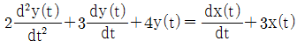
인 경우 x(t)를 입력, y(t)를 출력이라면 이 시스템의 전달함수는? (단, 모든 초기조건은 0 이다.)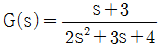
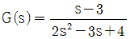
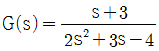
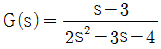
(정답률: 17%)
72. 그림의 신호 흐름 선도에서 y2/y1은?
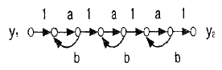
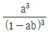
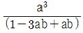
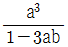
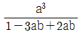
(정답률: 18%)
73. 특성방정식 (S+1)(S+2)(S+3)+K(S+4) = 0의 완전 근궤적상 K = 0인 점은?
- S = -4인 점
- S = -1, S = -2, S = -3인 점
- S = 1, S = 2, S = 3인 점
- S = 4인 점
(정답률: 17%)
74.
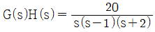
인 계의 이득 여유는?- -20[dB]
- -10[dB]
- 1[dB]
- 10[dB]
(정답률: 16%)
75. 선형 시불변 시스템의 상태 방정식이
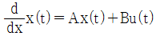
로 표시될 때, 상태 천이 방정식(state transition equation)의 식은? (단, ø(t)는 일치하는 상태 천이 행렬이다.)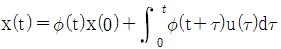
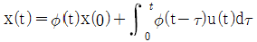
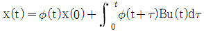
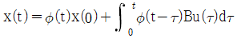
(정답률: 13%)
76. 2차 시스템의 감쇄율 δ가 δ ＞ 1 이면 어떤 경우인가?
- 비 제동
- 과 제동
- 부족 제동
- 발산
(정답률: 21%)
77. 보드 선도의 이득 교차점에서 위상각 선도가 -180° 축의 상부에 있을 때 이 계의 안정 여부는?
- 불안정하다.
- 판정 불능이다.
- 임계 안정이다.
- 안정하다.
(정답률: 18%)
78. Nyquist 판정법의 설명으로 틀린 것은?
- Nyquist 선도는 제어계의 오차 응답에 관한 정보를 준다.
- 계의 안정을 개선하는 방법에 대한 정보를 제시해 준다.
- 안정성을 판정하는 동시에 안정도를 제시해 준다.
- Routh-Hurwiz 판정법과 같이 계의 안정여부를 직접 판정해 준다.
(정답률: 13%)
79. 다음 중 을 z 변환하면?
(정답률: 12%)
80. 그림과 같은 폐루프 전달함수 에서 H에 대한 감도 SHT는?
(정답률: 12%)
5과목: 전기설비기술기준 및 판단기준
81. 최대 사용전압이 23kV인 권선으로서 중성선 다중접지 방식의 전로에 접속되는 변압기권선의 절연내력시험 시험전압은 몇 [kV]인가?
- 21.16
- 25.3
- 28.75
- 34.5
(정답률: 21%)
82. 고압 가공전선로의 지지물로는 A종 철근콘크리트주를 사용하고, 전선으로는 단면적 22mm2 의 경동연선을 사용한다면 경간은 최대 몇 [m] 이하이어야 하는가?
- 150
- 250
- 300
- 500
(정답률: 13%)
83. 특고압 옥내 전기설비를 시설할 때 특고압 옥내배선의 사용전압은 몇 [kV] 이하 이어야 하는가? (단, 케이블 트레이공사에 의하지 않으며, 위험의 우려가 없도록 시설한다.)
- 100
- 170
- 220
- 350
(정답률: 15%)
84. 가공전선로의 지지물에 시설하는 통신선 또는 이에 직접 접속하는 가공통신선의 높이에 대한 설명으로 적합한 것은?
- 도로를 횡단하는 경우에는 지표상 5[m] 이상
- 철도 또는 궤도를 횡단하는 경우에는 레일면상 6.5[m] 이상
- 횡단보도교 위에 시설하는 경우에는 그 노면상 3.5[m] 이상
- 도로를 횡단하며 교통에 지장이 없는 경우에는 4.5[m] 이상
(정답률: 19%)
85. 사용전압이 170[kV]일 때 울타리 · 담 등의 높이와 울타리 · 담 등으로부터 충전부분까지의 거리 [m]의 합계는?
- 5
- 5.12
- 6
- 6.12
(정답률: 17%)
86. 직류식 전기철도용 천차선로의 절연 부분과 대지간의 절연저항은 사용전압에 대한 누설전류가 궤도의 연장 1㎞마다 가공 직류 전차선(강체조가식은 제외)에서 몇 [mA]를 넘지 아니하도록 유지하여야 하는가?
- 5
- 10
- 50
- 100
(정답률: 18%)
87. 중량물이 통과하는 장소에 비닐외장케이블을 직접 매설식으로 시설하는 경우 매설깊이는 몇 [m] 이상이어야 하는가?(2021년 09월 01일 변경된 KEC 규정 적용됨)
- 0.8
- 1.0
- 1.2
- 1.5
(정답률: 18%)
88. 220V 저압 전동기의 절연내력 시험전압은 몇 [V]인가?
- 300
- 400
- 500
- 600
(정답률: 18%)
89. 사용전압 22.9kV의 가공전선이 철도를 횡단하는 경우, 전선의 레일면상의 높이는 몇 [m] 이상이어야 하는가?
- 5
- 5.5
- 6
- 6.5
(정답률: 19%)
90. 비접지식 고압전로에 시설하는 금속제 외함에 실시하는 제1종 접지공사의 접지극으로 사용할 수 있는 건물의 철골 기타의 금속제는 대지와의 사이에 전기저항 값을 얼마이하로 유지하여야하는가?
- 2[Ω]
- 3[Ω]
- 5[Ω]
- 10[Ω]
(정답률: 11%)
91. 지중전선로에 사용하는 지중함의 시설기준으로 옳지 않은 것은?
- 크기가 1m3 이상인 것에는 밀폐 하도록 할 것
- 뚜껑은 시설자 이외의 자가 쉽게 열 수 없도록 할 것
- 지중함안의 고인 물을 제거할 수 있는 구조일 것
- 견고하고 차량 기타 중량물의 압력에 견딜 수 있을 것
(정답률: 17%)
92. 특고압 가공전선이 교류전차선과 교차하고 교류전차선의 위에 시설되는 경우, 지지물로 A종 철근 콘크리트주를 사용한다면 특고압 가공전선로의 경간은 몇 [m] 이하로 하여야 하는가?
- 30
- 40
- 50
- 60
(정답률: 13%)
93. 특고압 및 고압 전로의 절연내력 시험을 하는 경우, 시험안전압은 연속으로 몇 분 동안 가하여 시험하여야 하는가?
- 1분
- 2분
- 5분
- 10분
(정답률: 21%)
94. 관, 암거 기타 지중전선을 넣은 방호장치의 금속제 부분 및 지중전선의 피복으로 사용하는 금속체에는 제 몇 종 접지공사를 하여야 하는가?
- 제1종
- 제2종
- 제3종
- 특별 제3종
(정답률: 15%)
95. 다음 중 고압 옥내배선의 시설로서 알맞은 것은?
- 케이블 트레이 공사
- 금속관 공사
- 합성수지관 공사
- 가요전선관 공사
(정답률: 16%)
96. 버스 덕트 공사에 의한 저압 옥내배선에 대한 시설로 잘못 설명한 것은?
- 환기형을 제외한 덕트의 끝부분은 막을 것
- 사용 전압이 400[V] 미만인 경우에는 덕트에 제2종 접지 공사를 할 것
- 덕트의 내부에 먼지가 침입하지 아니하도록 할 것
- 사용 전압이 400[V] 이상인 경우에는 덕트에 특별 제3종 접지 공사를 할 것
(정답률: 17%)
97. 발전기의 보호장치로서 사고의 종류에 따라 자동적으로 전로로부터 차단하는 장치를 시설하여야 하는 경우가 아닌 것은?
- 발전기에 과전류나 과전압이 생긴 경우
- 용량이 50[kV] 이상의 발전기를 구동하는 수차의 압유장치의 유압이 현저하게 저하한 경우
- 용량 100[kVA] 이상의 발전기를 구동하는 풍차의 압유장치의 유압이 현저하게 저하한 경우
- 용량이 10,000[kVA]이상인 발전기의 내부에 고장이 생긴 경우
(정답률: 16%)
98. 시가지에 시설하는 고압 가공전선으로 경동선을 사용하려면 그 지름은 최소 몇 [㎜] 이어야 하는가?
- 2.6
- 3.2
- 4.0
- 5.0
(정답률: 12%)
99. 사용 전압 22.9[kV]인 가공 전선과 지지물과의 이격거리는 일반적으로 몇 [㎝] 이상이어야 하는가?
- 5
- 10
- 15
- 20
(정답률: 17%)
100. 특고압의 전기집진장치, 정전도장장치 등에 전기를 공급하는 전기설비 시설로 적합하지 아니한 것은?
- 전기집진 응용장치에 전기를 공급하는 변압기 1차측 전로에는 그 변압기 가까운 곳에 개폐기를 시설할 것
- 케이블을 넣는 방호장치의 금속체 부분에는 제2종 접지공사를 할 것
- 잔류전하에 의하여 사람에게 위험을 줄 우려가 있으면 변압기 2차측에 잔류전하를 방전하기 위한 장치를 할 것
- 전기집진장치는 그 충전부에 사람이 접촉할 우려가 없도록 시설할 것
(정답률: 18%)